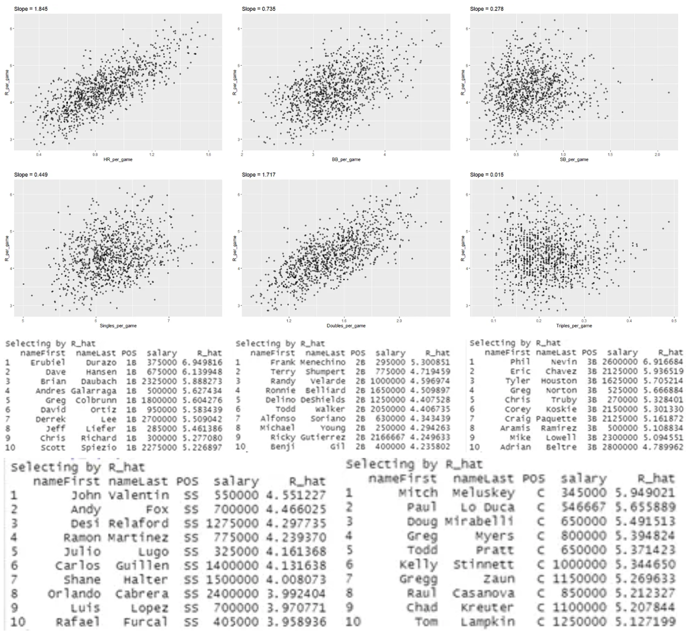

|
Rifqi Azhari I'm a research scientist at Google DeepMind in San Francisco, where I lead a small team that mostly works on NeRF. At Google I've worked on Glass, Lens Blur, HDR+, VR, Portrait Mode, Portrait Light, and Maps. I did my PhD at UC Berkeley, where I was advised by Jitendra Malik. I've received the PAMI Young Researcher Award. |
{kind=link}
ResearchI'm interested in computer vision, deep learning, generative AI, and image processing. Most of my research is about inferring the physical world (shape, motion, color, light, etc) from images, usually with radiance fields. Some papers are highlighted. |
|
Experimental Study on The Optimum Design of Diffuser-Augmented Horizontal-Axis Tidal Turbine
Evi Elisa Ambarita, Rifqi Azhari, Harinaldi, Ridho Irwansyah Oxford University Press (OUP) Clean Energy, Volume 6, Issue 5, 776–786, 2022 Compared experimentally two different diffuser angles in a diffuser-augmented horizontal axis tidal turbine in a flowing tank with a current velocity of 0.7 m/s. Those two angles came up as the most optimal angles from the previous numerical research which was conducted with multi-objective optimization methods such as genetic algorithms and neural networks. |
|

|
Hybrid Vertical Take-Off Landing (VTOL) Fixed Wing Urban Air Mobility Design with Foldable Wing
Flying Car Universitas Indonesia: Rifqi Azhari (Team Leader), Ilham Santoso, Tristan Ardhika, Khalfan Nadhief, Farhan Almasyhur, Yogasatya Adikhansa, Dr. Mohammad Adhitya (Advisor), Prof. Benyamin Kusumoputro (Advisor) Teknofest Flying Car Design Competition, Finals, Istanbul, 2021 Built passenger drone design that could travel up to 300 km. Designed with multiple cameras as its main autonomy sensor, the drone adopted Convolutional Neural Networks (CNN) algorithm as its main algorithm. |

|
Goods Transporter Small High Wing Unmanned Aerial Vehicle with Color Sensor Camera
UAV Universitas Indonesia: Bintang Farhan (Team Leader), Viliasio Sirait, Fauzi Mahdy, Ales Daniel, Rifqi Azhari, Ilham Santoso, Dr. Yohan Suryanto (Advisor), Dr. Mohammad Adhitya (Advisor), Dr. Ridho Irwansyah (Advisor) TUBITAK, 136, 2008 Built a goods carrier drone that could carry small objects with maximum size of 10x10 cm. Equipped with color detector camera that had been developed on the python OpenCV, the payload will instantly be dropped at the time the camera detected the target area. Designed with a high wing model, the UAV could fly at a very low speed due to high lift generated from the high wing. |
|
Circuit Racer Micro Flying Plank Unmanned Aerial Vehicle with Mechanical Launcher
UAV Universitas Indonesia: Rifqi Azhari (Team Leader), Daniel Simatupang, Adam Maulana, Syafira Tasya, Edrian Budi, Louis, Anindya, Laksamana Wibowo, Dr. Radon Dhelika (Advisor) Kontes Robot Terbang Indonesia, Final Event, Online, 2020 Built an agile drone that has the ability to maneuver in a high speed condition. Powered by a 6S lithium polimer battery, the drone can perform high acceleration, which allows it to reach its maximum speed in a very short time. Additionaly, the drone was also equipped with auto-throttle and catapult for its launch mechanism. The elastic potential energy from the launcher helps the drone to take off rapidly, giving a big initial velocity for the propulsion system. |
|

|
Aerial Mapper Small Flying Wing Unmanned Aerial Vehicle
UAV Universitas Indonesia: Viliasio Sirait (Team Leader), Farhan Oktavian, Marwah Zulfanny, Rifqi Azhari, Fadhil Dwinanda, Ilham Santoso, Rivaldo Marta, Prof. Ario Sunar Baskoro (Advisor) Kontes Robot Terbang Indonesia, Final Event, Pasuruan, 2019 Built a drone that has mission to collect visual data and create 2-dimensional maps of areas while conduct live video streaming during the data collecting process. Designed as a flying wing model with big winglets, the drone could fly very stable and turn very easily in a small radius so the map does not have any gaps. |
Teaching |
Certifications |
Analytics Portfolio |
|
Predict House Prices (Regression) using XGBoost, Linear Regression, Ridge Regression, Lasso Regression, Lightgbm Regression, and CatBoost Regression with Cross Validation (Top 13% in Kaggle - Solo)
Rifqi Azhari Oxford University Press (OUP) Clean Energy, Volume 6, Issue 5, 776–786, 2022 When buying a house, customers usually have considerations about things like the presence of a garage, the number of bedrooms, the number of floors, and the age of the house. On this occasion, I am given The Ames Housing dataset compiled by Dean De Cock and provided by Kaggle. This dataset talks about many variables of houses from the count into its variable area. Our objective is to predict the sales price for each house. I use many regression algorithms to build the model for this case. From what I worked on, the results stated that The CatBoost Regression makes the best prediction with score 0.12635 (TOP 13%) followed by Lightgbm Regression with 0.13600, XGBoost Regression with 0.13846, Random Forest Regression with 0.14769, Ridge Regression with 0.16393, Lasso Regression with 0.18259, Linear Regression with 0.19824. Improvement still can be make by adding by applying cross-validation (CV), and more deeper EDA. |
|
|
Predict Spaceship Titanic Passenger Who Got Transported (Classification) using Logistic Regression, Random Forest, KNN, Decision Trees, SVM, GradientBoosting Classifier, Catboost Classifier with Cross Validation (Top 7% in Kaggle - Solo)
Rifqi Azhari Oxford University Press (OUP) Clean Energy, Volume 6, Issue 5, 776–786, 2022 In 2912, The Spaceship Titanic was an interstellar passenger liner launched a month ago. With almost 13,000 passengers on board, the vessel set out on its maiden voyage transporting emigrants from our solar system to three newly habitable exoplanets orbiting nearby stars. While rounding Alpha Centauri en route to its first destination—the torrid 55 Cancri E—the unwary Spaceship Titanic collided with a spacetime anomaly hidden within a dust cloud. Sadly, it met a similar fate as its namesake from 1000 years before. Though the ship stayed intact, almost half of the passengers were transported to an alternate dimension! From this unique case, we have the objective to predict whether a passenger was transported to an alternate dimension during the Spaceship Titanic’s collision with the spacetime anomaly. We use many classification algorithms for this binary classification case. From what I worked on, the results stated that the Catboost Classifier makes the best classifier algorithm with 0.80734 accuracy on the test set followed by Random Forest, SVM, Decision Trees, KNN, Logistic Regression. |
|
|
MNIST Digit Recognizer using VGG16 and ResNet50 with TensorFlow (Top 9% in Kaggle - Solo)
Rifqi Azhari Oxford University Press (OUP) Clean Energy, Volume 6, Issue 5, 776–786, 2022 This time I am provided MNIST data from Kaggle. MNIST data is a collection of 70,000 handwritten digit images. Our goal is to build a model that classifies each image of MNIST data into 10 different classes or digits (0, 1, 2, 3, 4, 5, 6, 7, 8, and 9). The data is separated between the training and test datasets with the 60:40 proportion. In other to evaluate our model, I need to match our predicted data to the actual data on the Kaggle website. We want to make prediction models using Convolutional Neural Network (CNN). The MNIST image was originally in 28x28 format but the data from Kaggle is in flattened format so we need to do some preprocessing to convert it to the original image dimension. |
|
|
CIFAR-10 Image Classification using VGG16 and ResNet50 with TensorFlow
Rifqi Azhari Oxford University Press (OUP) Clean Energy, Volume 6, Issue 5, 776–786, 2022 CIFAR-10 is an established computer-vision dataset used for object recognition. It is a subset of the 80 million tiny images dataset and consists of 60,000 32x32 color images containing one of 10 object classes, with 6000 images per class. It was collected by Alex Krizhevsky, Vinod Nair, and Geoffrey Hinton. In this case, we will use the 60,000 32x32 color images, 50,000 for the training set and 10,000 for the test set. Our objective is to build a model that could precisely classify the 10,000 test data. The model is still in development since the parameters could up to 27 million. |
|
|  |
Building a Baseball Team with Limited Budget ($40M) for 2002 MLB Season (code in R)
Rifqi Azhari Oxford University Press (OUP) Clean Energy, Volume 6, Issue 5, 776–786, 2022 We want to build a baseball team with a limited budget of forty million dollars for the 2002 MLB season. We will explore the data from Lahman Library from R which include team-level and player-level statistics. |
Miscellanea |
|
Feel free to steal this website's source code. Do not scrape the HTML from this page itself, as it includes analytics tags that you do not want on your own website — use the github code instead. Also, consider using Leonid Keselman's Jekyll fork of this page. |